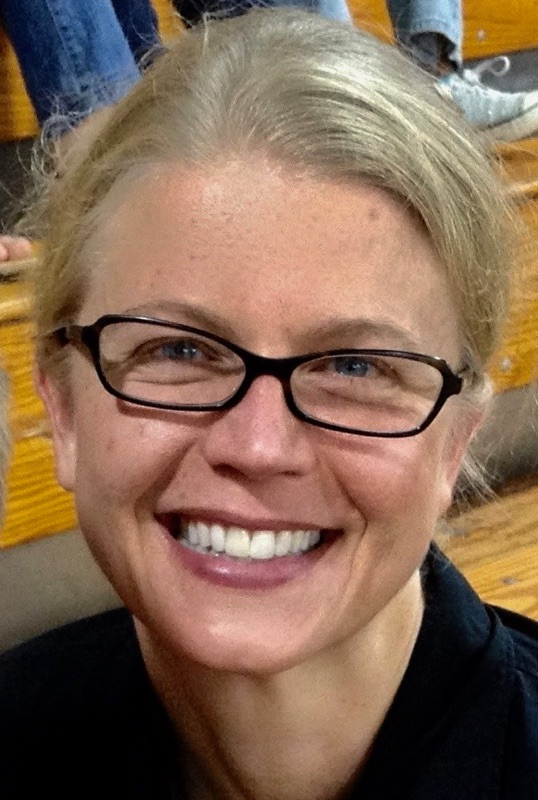

About Me

I am currently a student enrolled in the UNC Coding Bootcamp in Chapel Hill, NC. In this program, we are learning to be full stack web developers. I hope to work creating web applications for nonprofits, artists, writers, educators and other community support organizations.
My professional background includes software development and math education. I enjoy reading, writing, gardening, my backyard chickens and my two Boston Terriers. I have two kids in college at UNC Chapel Hill. My husband works for Danaher in IT Management.
Connect with Me